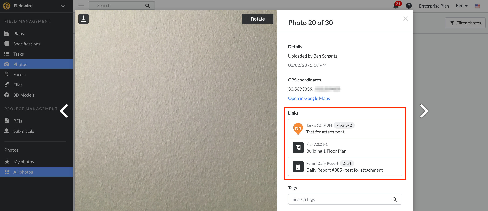

From the salesperson's sources to a trustworthy layout
A second round focused on source transcription, changes within a stretch and returning to the right customer job. Existing products and guides inform specific improvements to the current editor.
Agent simulations are not human usability research. Product guides establish documented behavior, not proof that a borrowed pattern will work here. Current observations, source-backed patterns and proposals are kept separate.
What the salesperson could actually do
| Task | Retained outcome | Friction or unresolved detail |
|---|
Method, isolation and limitations · Fictional source packet supplied to the entry session
What changes our understanding
Previously reported gate precision, model-summary and role-label issues remain in round 1. Repeated observations are not counted as new defects.
How existing tools handle the same work
Read the four independent research reports
A photo can lead back to its place in the job
Fieldwire's photo viewer lists its related plan and other records. For Fence AI, the smaller adaptation is a source-to-stretch or source-to-gate link, without introducing a field-task system.

Official image from Fieldwire's Photos guide, downloaded and visually inspected. This is not Fence AI, and the study did not operate Fieldwire.
A source-aware sales path, inside the existing workspace
Keep the plan and side view. Add persistent source context and a readable selected-stretch inspector instead of moving the salesperson into a full CAD workflow.
Open the right job
Customer + site address + saved state, visible throughout. Resume the active job.
Retain the agreement
Original contract, sketch and supplied messages. Unapproved requests remain distinct.
Record the layout
House/street reference, measured runs, labelled start points and numeric gate offsets.
Edit the selected range
Height, base and model in plain language. Preview exactly which interval changes.
Review the sold facts
Plan, elevation, promises and unknowns. Editing returns to the same review position.
A later message is not automatically an approved amendment. In the fictional packet, the signed side height is 1.8 m; the later 1.6 m request explicitly asks for confirmation. Preserve both without silently changing the sold specification.
Change part of a stretch without losing the rest
An 8 m street fence starts at 1.8 m high throughout. Preview replacing only a selected interval. Unaffected intervals remain visible; a committed change would need domain validation and history support.
| From start | Height | Proposed action |
|---|
Original run length, gate position, base and model are outside this example's edit scope. No application data is changed. This illustration does not implement wall-height reference, overlapping model rules or structural constraints.
What to prioritize for the salesperson MVP
Test these choices with actual salespeople using the same signed packet. Record dimension errors, omitted promises, unresolved requests and recovery from interruptions. Do not choose by screenshots or speed alone.
Evidence and boundaries
Synthesis, verification and open questions · Study method · First round
This artifact does not add features to Fence AI. Study data is fictional or isolated test data; research recommendations are not production changes.